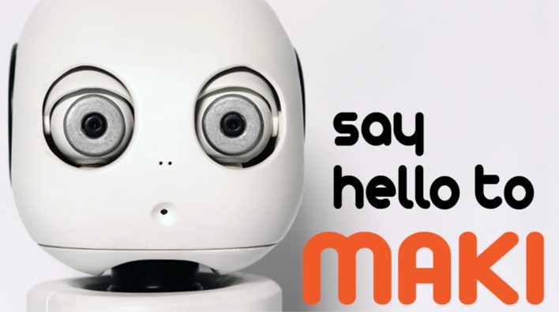
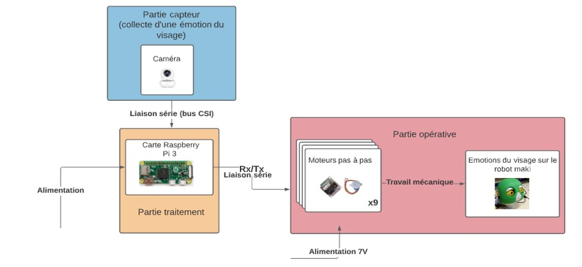

Duration
September 2021 - January 2022
Location
IUT de Cachan
Description
The Robot Maki project was designed to assist autistic children in recognizing and expressing their emotions. Our team created a robot capable of displaying facial expressions based on the emotions detected from the child's face, using an emotion recognition algorithm integrated into a Raspberry Pi. The goal was to make the learning process of emotional recognition easier for these children through an interactive and engaging humanoid robot.
This was my first experience working with humanoid robotics, and I was responsible for the software part of the project. I thoroughly enjoyed this experience, particularly learning how to develop AI and robotics systems that could interact with humans in such a meaningful way. It was fascinating to see how technology could be used to support children with special needs. The project introduced me to real-time emotion recognition and robotic motor control, both of which I found incredibly exciting.
The core software solution involved integrating the PiCamera with the Raspberry Pi to capture and analyze facial expressions using OpenCV. A convolutional neural network (CNN) was employed to detect emotions and control the stepper motors that animated the robot's face. I was also in charge of managing all the communications between the embedded system, the camera, and the motors. This included handling the GPIO pins of the Raspberry Pi to ensure smooth coordination between image recognition and the motor movements required to express emotions.
In addition to the emotion recognition software, I worked on optimizing the communication protocols to maintain real-time interactions between the camera and motors. Ensuring that the motors responded in sync with the emotions detected by the PiCamera required precise timing and efficient use of the Raspberry Pi’s computational resources.